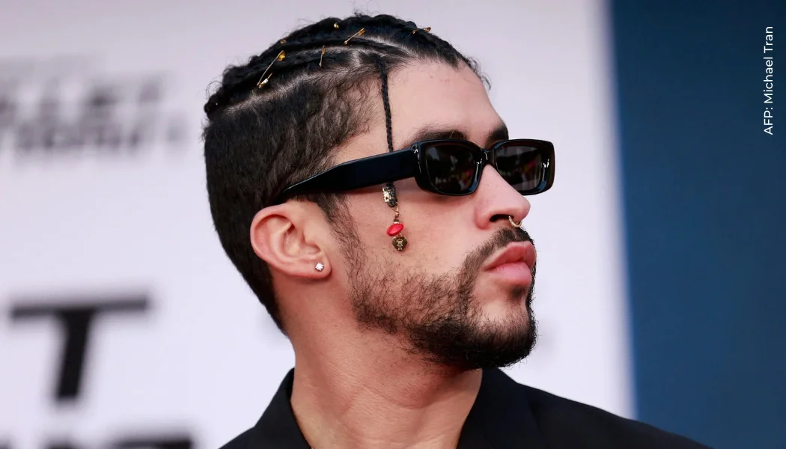

Un verano sin ti (2022)(Album)
--
Datos Random.

Imagen:Bad Bunny
Su nombre real es Benito Antonio Martínez Ocasio.
Eligió su nombre artístico porque cuando era niño se vio obligado a usar un disfraz de conejo para ir a la escuela.
Perteneció al coro de la iglesia de su barrio desde los cinco a los trece años.
Se define como un individuo de sexualidad fluida.
Es partidario de luchar contra la homofobia y las discriminación de género en sus canciones.
Es el primer artista urbano latino en figurar en la portada de la revista estadounidense Rolling Stone.
Es el primer artista estadounidense de habla no inglesa en ser el artista más escuchado del año en Spotify, tres veces consecutivas entre 2020 y 2022.
Es el primer latino en tener un álbum en español en el número uno de la lista Billboard 200.
Le gustaba acompañar a su mamá de compras, ya que la ropa femenina le gustaba por su variedad de textura, colores y modelos.
Soñaba con ser dueño de cada par de gafas de sol que existiera en el mundo cuando creciera.